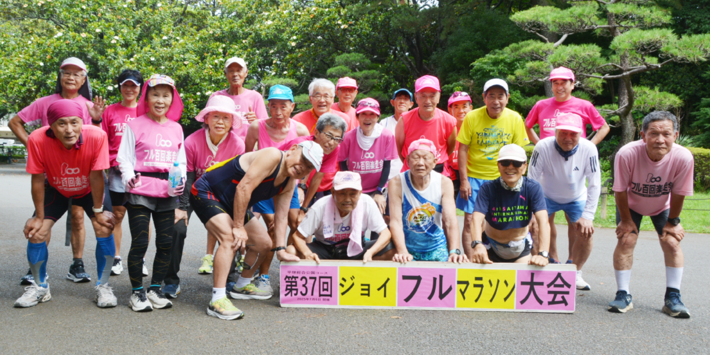
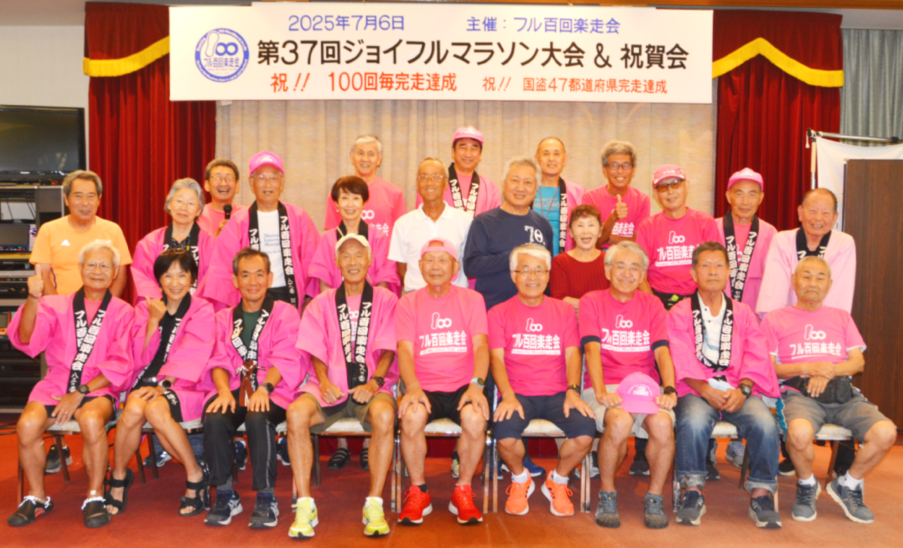

2025-07-06 17:56:13
開催日: 2025年 7月 6日
天 気：薄曇り 気温(湿度)： 8時 28.5℃(78％) 12時 33.4℃(56％) 14時 33.9℃(58％)
会 場：平塚総合公園 周回コース（1.705m✕24周＋1.275m✕１周）
| 着順 | 会員No | 氏名 | 種目 | タイム |
|---|---|---|---|---|
| 1 | 非会員 | 西松 敏昭 | フル | 4時間39分45秒 |
| 2 | 841 | 福井 康太 | フル | 4時間54分20秒 |
| 3 | 900 | 伊藤 晶 | フル | 4時間55分39秒 |
| 4 | 856 | 井出 優子 | フル | 6時間32分37秒 |
| 5 | 746 | 田中 国貞 | フル | 7時間59分02秒 |
| 6 | 790 | 佐藤 儀雄 | フル | 8時間03分40秒 |
| 7 | 818 | 阿部 真 | フル | 8時間07分29秒 |
| 8 | 817 | 石井 功 | フル | 8時間36分02秒 |
| 9 | 847 | 浜岸 建 | フル | 9時間38分40秒 |
| 10 | 3 | 竹田 昭彦 | フル | 9時間49分51秒 |
| 11 | 854 | 宮野 繁 | フル | 9時間55分39秒 |
| 12 | 894 | 池尻 彰 | 35.8km | 5時間58分02秒 |
| 13 | 101 | 茅野 建文 | 25.6km | 4時間58分57秒 |
| 14 | 749 | 瀬戸 君子 | 23.4km | 5時間10分00秒 |
| 15 | 830 | 島田八十美 | 22.2km | 4時間22分07秒 |
| 16 | 223 | 榎本 博康 | 22.2km | 6時間39分53秒 |
| 17 | 827 | 山口 義治 | 21.7km | 4時間56分51秒 |
| 18 | 792 | 大川 昌守 | 17.1km | 4時間37分15秒 |
| 19 | 780 | 天野 稔 | 11.9km | 1時間50分55秒 |
| 20 | 100 | 梅原 正子 | 10.2km | 2時間50分00秒 |
| 21 | 888 | 遠藤眞喜子 | 8.5km | 3時間26分09秒 |
| 22 | 787 | 植田 秀夫 | 5.1km | 1時間03分00秒 |
| 23 | 861 | 飯田 和好 | 1.7km | 0時間14分17秒 |
| 24 | 7 | 吉野 孝敏 | 1.7km | 1時間00分00秒 |
| 25 | 511 | 原沢 勲 | DNS | － |
| 26 | 839 | 本内 克洋 | DNS | － |
・フル完走 11名 ・DNF(種目変更) 13名 ・DNS 2名
・感 謝
田場さん 沖縄からオリオンビールの差入-送っていただきました。美味かったぁ‼
古橋さん 飲み物とお菓子持参、差入していただきました。ありがとうございます。

